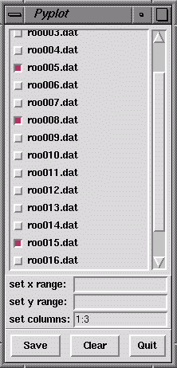

Pyplot : A Graphical Interface for Gnuplot
Got Python?
Gnuplot
ctfmatch is another plotting program, useful
for viewing the CTF outputs of SPIDER's 'TF ED' operation.
Pyplot is a program, written in Python, that provides a simple
interface to gnuplot. The arguments to pyplot are the SPIDER doc files you wish to
plot (unix wildcards are allowed):
USAGE: pyplot roo*
A list of data files is presented in a graphical interface. As each file is selected,
it is plotted using gnuplot. Clicking on an already selected file deselects it, and removes
it from the plot. Here's what it looks like:
|  |
|
 |
- The set x range and set y range entry fields permit you to change
those values; they're the same as the "set xrange[ : ]" and "set yxrange[ : ]"
commands in gnuplot.
- The set columns entry field specifies which columns in the doc file
should be plotted. It is the same as the "using 1:3" command in gnuplot.
The default setting is 1:3 (use first and third columns).
You can plot multiple columns in the same file by using a different column
setting for each column, separated by a comma. E.g.,
set columns: 3:5,3:6 will plot columns 5 and 6 against column 3 (x axis).
Values typed into the set X range, set Y range, and set columns
entry fields must be of the form Low:High, where Low and High
are numbers seprated by a colon. Either number may be left out to specify the start or
end of the data. E.g.,set x range 50: sets the x range from 50 to the highest
data point. Set Y range :1.0 means use data from the lowest value up to 1.0.
- The Save button allows the user to save the plot commands to a file.
This file can later be loaded into gnuplot.
- The Clear button clears all current selections. (Due to a bug in the
gnuplot "clear" command, it may not fully clear the plot.)
Gnuplot
An online manual for gnuplot is available at
www.gnuplot.info/docs/gnuplot.html.
Lots of gnuplot links at Gnuplot Central.
Back to index